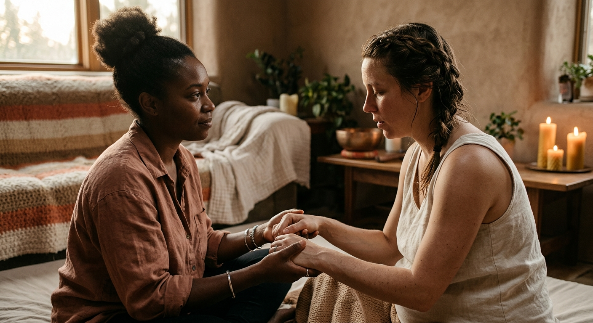
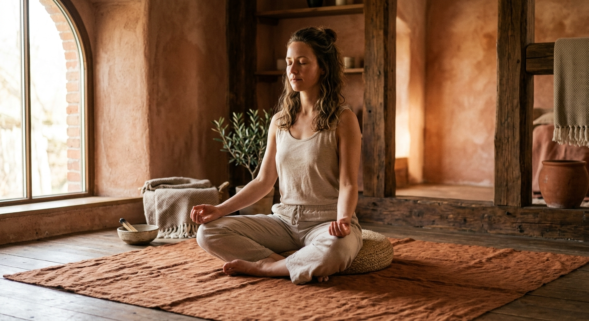
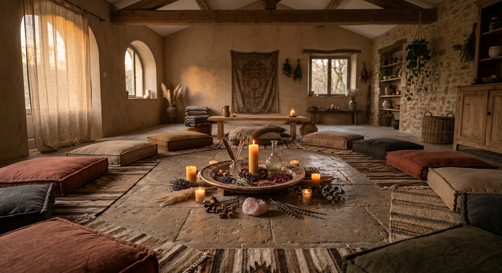

We work through the body. Find the specific container that calls to you, whether you are seeking birth advocacy, pelvic reclamation, or a sacred womb-fire gathering.

Core Sanctuary Container
Birth & Doula Support
EmbraceIN has an experienced WOMBS certified doula working in Johannesburg offering personalised prenatal, birthing & postpartum support. Our goal is to give you and your family the attention and knowledge you need to make informed decisions about your pregnancy and labor process. We offer a variety of support services personalised for each client. We provide advice on everything from nutrition and exercise to developing a birth plan and picking the right birthing facility. We also provide you and your partner with care, understanding, information and support before and after birth. Our initial meeting will help us tailor our packages to fit your needs. Get in touch to find out more.
Fully Trauma-Informed Framework
Align With Us first
No automatic online calendars. We connect with intention. Each program begins with a 20-minute phone call or safe herbal tea consultation.
“A deep deceleration of the nervous system. Integrating medical checklists with intentional, physical breath anchors and body grounding so your womb remains a sanctuary, not just a clinical host.”
Program Includes & Covers
Pre-retrieval and pre-transfer pelvic relaxation sessions
Accompaniment and advocacy during egg retrievals and transfers in Johannesburg clinics
Dedicated emotional container for processing the trial-and-error cycles
Deeply Suited for
Women currently navigating or preparing for assisted reproductive technology (IVF, IUI)Those experiencing anxiety, dissociation, or loneliness during conception journeys
“A heavy, warm, physical anchor. A quiet voice pushing past noise, firm hands applying double hip squeezes in the peak of waves, and an unshakeable boundary in the birthing room.”
Program Includes & Covers
3 deep in-person prenatal preparation sessions in Sandton studio/home
Continuous on-call availability from 37 weeks until birth
Uninterrupted physical and advocacy support throughout labor and initial skin-to-skin
Postpartum check-in and birth integration within the first week
Deeply Suited for
First-time mothers seeking an empowered, autonomous labor experienceVaginal Birth After Cesarean (VBAC) seekers needing high AdvocacyMothers wanting deep, non-medical pain coping strategies
“The smell of rich warming broths, the physical security of traditional Bengkung belly binding, and a warm, safe hands-off pocket of absolute quiet to sleep, bleed, and heal.”
Program Includes & Covers
Ancestral postpartum nutrition: healing soups, teas, and warming porridges cooked in your kitchen
Traditional postpartum abdominal wrapping (Bengkung or tailored elastic/linen)
Candid, tender birth story integration sessions to process your delivery process
Deeply Suited for
Mothers wishing to protect the sacred 40-day postpartum windowWomen without local family support in JohannesburgThose wanting a trauma-informed recovery after difficult or surgical births
All physical bodywork is performed under the protection of certified healthcare guidelines in our Beverley, Sandton studio.

Core Sanctuary Container
Yoga & Somatic Movement
As knowledgeable Yoga teachers, we want to make the practice of yoga accessible, joyful, and an integral part of people’s otherwise busy lives. Based in Johannesburg, Our intention as professional Yoga Instructors is to help our clients listen to their inner selves and find the courage to step out of their comfort zone. Get in touch if you’re new to yoga or want to find out more.
As experienced Meditation Coaches we've made it our mission to guide those that seek to enter the doorway to deeper insight by applying meditation to their daily lives. With workshops, one-on-one coaching, and online sessions, we tailor our meditation guidance to suit your needs and lifestyle. We have dedicated ourselves to helping others feel more empowered and fulfilled through meditation.
Fully Trauma-Informed Framework
Align With Us first
No automatic online calendars. We connect with intention. Each program begins with a 20-minute phone call or safe herbal tea consultation.
“Grounded standing postures, deep hip opening, and low guttural breath work. Strong but spacious, physical, and highly stabilizing.”
Program Includes & Covers
Pelvic floor release and containment techniques
Anatomical posturing to encourage optimal fetal positioning (optimal spinning babies)
Labor breathing practices integrated directly into strong, physical holds
Deeply Suited for
Pregnant women from 12 weeks to birth trying to find comfort inside their changesMothers wanting to train their nervous system to stay quiet under heavy physical stimulation
“Quiet, heavy, tactile exploration. Slower floor-based sequencing, physical pelvic tilts, and internal resonance tracking that moves past static mind chatter.”
Program Includes & Covers
Pelvic floor tension mapping and somatic release
Womb-heart connection flow mapping
Intuitive breathing and nervous system soft-drops
Deeply Suited for
Women struggling with sexual dissociation, pelvic pain, or lack of bodily vital sensationThose navigating postpartum scar tissue, menopause, or fertility grief
All physical bodywork is performed under the protection of certified healthcare guidelines in our Beverley, Sandton studio.

Core Sanctuary Container
Empowerment & Sacred Circles
At EmbraceIN we believe that each woman is divine and deserves to be empowered and appreciated. We offer an array of courses, workshops, and retreats designed to help women recognize and celebrate their unique feminine power. Our goal is to create a safe and supportive space for women to share their stories, be inspired to take action, and express their divine feminine energy. We are committed to assisting women in re-discovering their divine nature and unlock their potential. We invite you to be part of our journey of transformation and self-discovery.
EMBRACEIN also specializes in a wide range of teenager and children's classes and sessions. While we offer cutting-edge and fun classes, we also focus on preventative strategies to ensure the new generation stays happy, healthy and grow to be balanced adults with no traumas to heal from. Contact us to find out more.
We know that life can seem like a repetitive cycle of waking up, eating, working and sleeping. And that the daily grind can fill our minds and bodies with negative energy and stress. That’s why EMBRACEIN will occasionally partner with likeminded organisations to bring you cosmic events and retreats so our community has a place to return to self-exploration, self-discovery, and sharing a journey with other like-minded individuals.
Fully Trauma-Informed Framework
Align With Us first
No automatic online calendars. We connect with intention. Each program begins with a 20-minute phone call or safe herbal tea consultation.
“Soft, artistic, holding. Beautiful flowers, simple warm crafts, tactile guidance, and an absolute feeling of belonging and protection.”
Program Includes & Covers
Anatomy of wonder: physical explanation of menstrual phases and cycles with fabric models
Introduction to sustainable pelvic hygiene with somatic sensory choice
Parent-child connection ceremony to celebrate the threshold
Deeply Suited for
Young girls approaching or who have just entered menarcheParents looking for a sacred, grounded way to initiate their daughters into feminine cyclical health